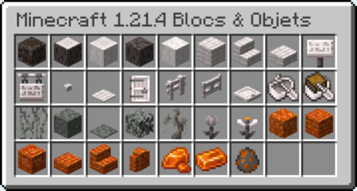

1.21.4 : The Garden Awakens

A retenir
Découvrez le nouveau biome mystérieux : Le Jardin pâle, caractérisé par ses chênes pâles majestueux, sa mousse flottante et son atmosphère mystérieuse et unique.
Nouveaux éléments de construction : Découvrez de nouveaux matériaux comme les briques de résine, les oeilchidées lumineuses, et le nouveau bois des chênes pâles.
Nouvelle entité hostile : Rencontrez le creaking, un mystérieux monstre gardant les coeurs de creaking et possédant des mécaniques de combat uniques.
Nouvelles interactions : La mousse et les oeilchidées réagissent avec l'environnement, créant de nouveaux effets visuels et permettant de nouvelles possibilités de craft.
